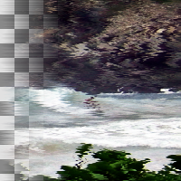

Shift
Shift each row or column of pixels by a random amount
Shift
Maximum amount to shift
name: shift
type: int
default: 5
minimum: 0
maximum: 200
ui-minimum: 0
ui-maximum: 200
ui-gamma: 1.00
ui-step-small: 1
ui-step-big: 10
unit:pixel-distance
Shift direction
name: direction
type: enum
Random seed
name: seed
type: seed
default: 0
minimum: 0
maximum: +inf
pads: input output
parent-class: GeglOperationAreaFilter
categories: distort
source: operations/common-gpl3+/shift.c
license: GPL3+
 This page is part of the online GEGL Documentation, GEGL is a data flow based image processing library/framework, made to fuel GIMPs high-bit depth non-destructive editing future.
This page is part of the online GEGL Documentation, GEGL is a data flow based image processing library/framework, made to fuel GIMPs high-bit depth non-destructive editing future.